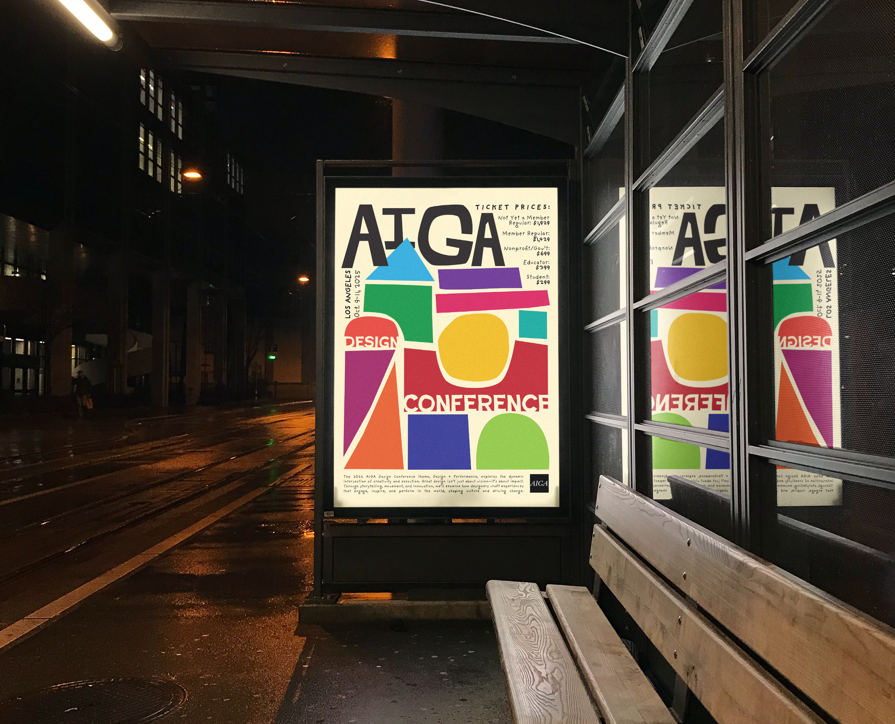
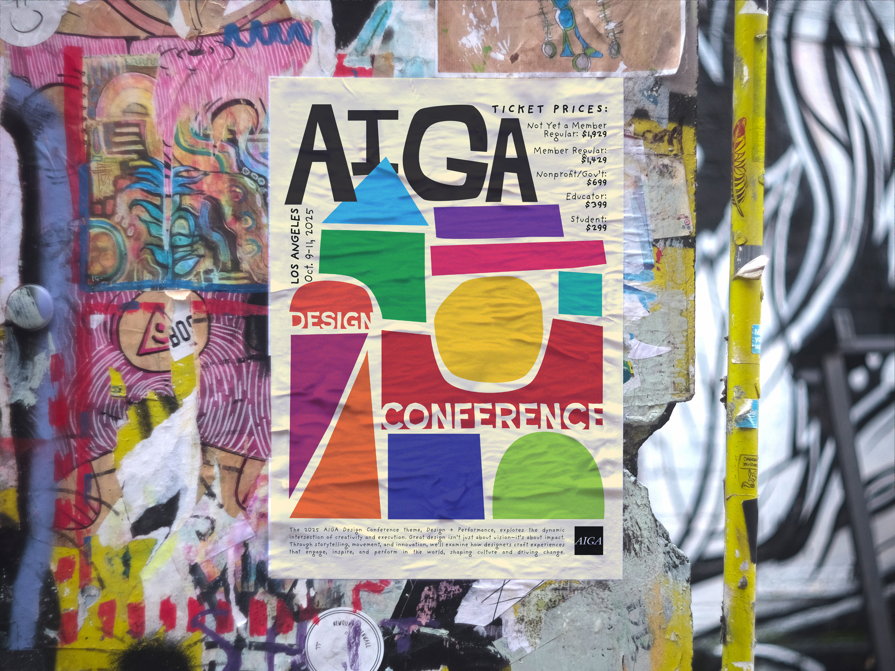
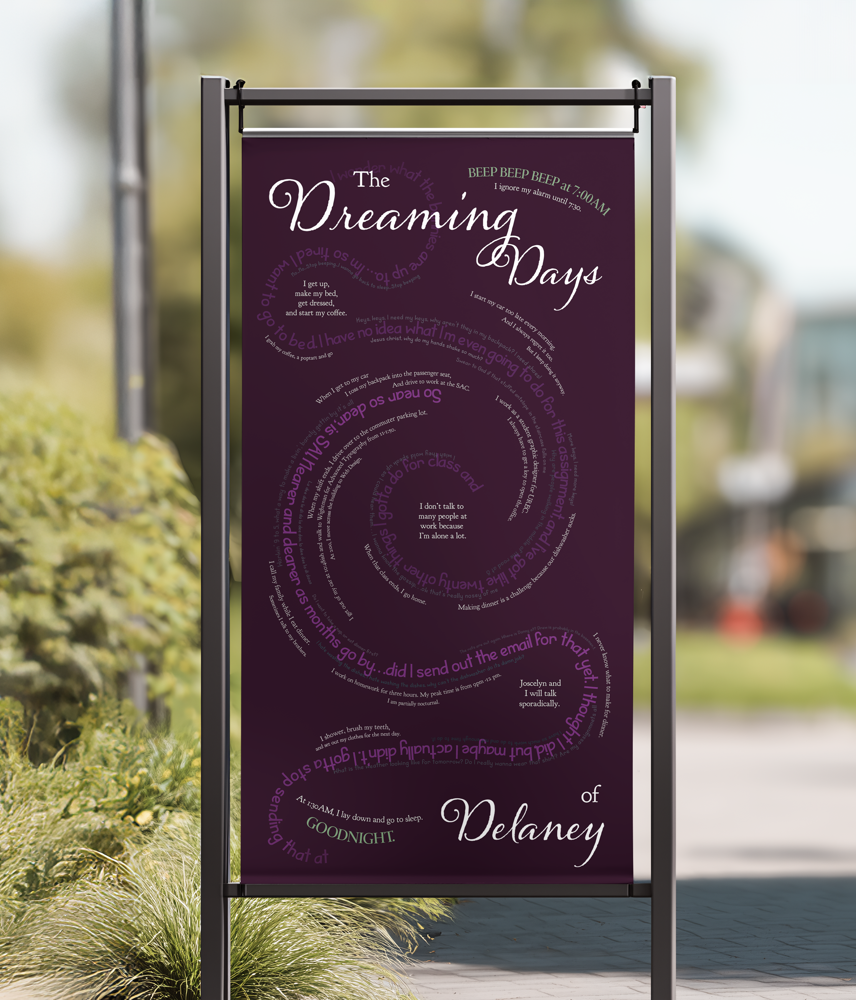

This trio is a group of posters done for my Advanced Typography class with Professor David Stairs. The AIGA poster was an advertisement for the 2025 Design Conference that they hold, including location, time, and ticket prices. My class was tasked to find a design style that we enjoyed and emulate that in our poster. I looked at the Polish Poster Movement of the 1950s and also from designer Corita Kent. The second poster was an informatic about the types of trees that Michigan has and how many of each tree species. I measured this by allowing each ring’s thickness to correspond to the amount. The end goal was that the rings stacked within one another would emulate tree rings and years of growth. The last poster was approximately the size of a door, and showcases my day, with my schedule of where I go and what I do in white text. The faint swirling middle text represents all my thoughts throughout the day, and is done in the typeface that I created.